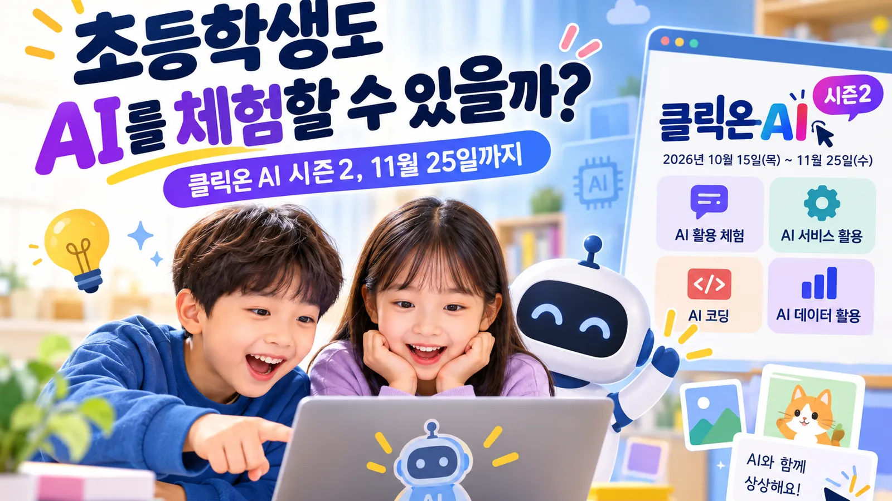
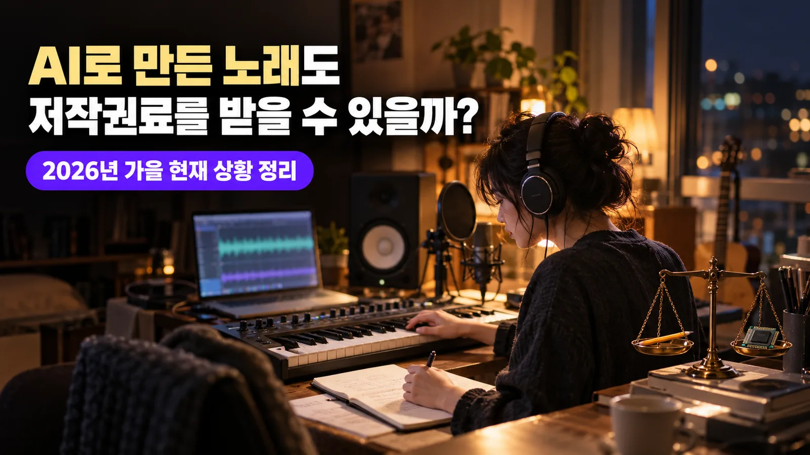

생성형 AI 첫걸음
AI가 어떻게 답을 만드는지, 무엇을 넣지 말아야 하는지, 어떻게 물어야 하는지를 직접 해 보며 익힙니다.
초등 고학년~고등교사 · 학부모 연수
- AI 사용 약속
- 질문 잘하는 법
- AI가 틀리는 순간
학교 · 늘봄 · 동아리 · 기관 연수의 대상과 시간에 맞춰 구성합니다. 모든 AI 수업은 이용 연령 기준과 개인정보 보호를 지키며 진행합니다.
AI가 어떻게 답을 만드는지, 무엇을 넣지 말아야 하는지, 어떻게 물어야 하는지를 직접 해 보며 익힙니다.
나를 표현하는 단어로 가사를 쓰고 AI로 노래 시안을 만듭니다. AI가 만든 부분과 내가 고친 부분을 말하는 시간이 핵심입니다.
그림동화와 기록 전자책을 실제로 펴낸 경험을 바탕으로, 학생이 기획부터 글 · 그림 · 표지까지 한 권의 책을 완성하도록 설계 중입니다.
발성과 표현을 넘어, 무대에서 자기 생각을 전하는 자신감을 기릅니다. 2020년부터 중학교 보컬동아리를 지도하고 있습니다.
노래와 칼림바, 붐웨커, 컵타, 리코더, 오카리나, 우쿨렐레, 핸드벨·톤차임을 미술과 함께 놀이로 엮습니다. 소리를 몸으로 느끼는 첫 경험을 설계합니다.
풍선, 후프, 볼링, 펌프, 댄스, 탁구를 음악과 전래놀이로 엮습니다. 박자에 맞춰 달리고 뛰며 몸을 쓰는 즐거움을 기릅니다.
손글씨로 마음을 담는 법을 배웁니다. 2022년 경기꿈의학교 「이지(ezsy) 캘리그라피」를 직접 기획 · 운영했습니다.
대상과 차시, 목표를 알려 주시면 일곱 갈래를 엮어 맞춤 수업으로 설계합니다.
맞춤 수업 문의하기ezsy 이지의 '쉽게'는 결과를 대신 만들어 준다는 뜻이 아닙니다. 노래와 책을 실제로 내놓아 본 경험으로, 학생이 스스로 만들 수 있게 길을 줄여 준다는 뜻입니다.
답을 주기보다 묻습니다. 좋아하는 말과 감정에서 수업이 시작됩니다.
가사, 노래, 글, 그림으로 생각을 작품으로 옮깁니다. AI는 그 과정의 도구입니다.
창작의 경험을 자기이해와 진로 탐색, 협력과 성찰로 잇습니다.
어려운 것을 쉽게, 그러나 결과는 나답게.
이지연, ezsy 이지
그것이 ezsy 이지가 수업을 만드는 방식입니다.
세 가지 질문에 답해 보세요. 지금 시도해 볼 만한 작은 창작 활동을 제안합니다.
심리검사나 적성검사가 아닙니다. 개인정보를 묻지 않으며, 선택한 내용은 어디에도 전송되지 않습니다.
교실에서 가르치는 목소리는 2002년부터 이어 온 무대와 녹음실에서 다듬어졌습니다. CCM 그룹 마르지 않는 샘의 정규 음반, 듀엣 싱글, 피처링과 컴필레이션, 그리고 어린이·청소년 찬양 음반의 음악감독과 보컬디렉터로 함께한 작품입니다.
CCM 그룹 '마르지 않는 샘'의 세 번째 정규 음반에 참여했습니다.
네 번째 정규 음반에 참여했습니다.
결혼을 축복하는 마음을 담아 함께 부른 웨딩송입니다.
성탄의 기쁨을 두 사람의 목소리로 전한 캐럴입니다. 이 곡으로 신한대학교 제3회 캐롤 콘테스트에서 보컬상을 받았습니다.
위에 정리한 음반 외에도 여러 음반에 코러스와 피처링으로 참여했으며, 공연기획·연출과 음반 재킷 캘리그라피 작업을 함께해 왔습니다. 트랙 번호와 발매 연도는 각 음원 사이트의 음반 정보를 기준으로 했습니다.
노래로 하던 이야기를 책으로도 씁니다. AI를 창작의 동료로 삼아 펴낸 두 권의 전자책입니다.
청소년이 주인공이 되는 무대를 직접 기획하고 연출해 왔습니다.
신한대학교 주최. 이호석 & 이지연 팀으로 「Merry Christmas To You」를 불러 보컬상을 받았습니다.
안산시 다문화지원본부 주최. 다문화가정과 내국인가정 청소년이 함께 서는 합창 무대를 재즈밴드 협연의 콘서트 형식으로 연출했습니다.
한국관광공사 제주지사 주최. 댄스, 전통무용, 악기, 성악, 뮤지컬 등 30팀이 지원해 본선 10팀, 약 150명이 함께한 무대를 연출했습니다.
한국관광공사 제주지사 주최. 제주 공연문화 활성화를 위해 사흘간 제주 지역 다섯 학교를 찾아가 약 1,200명의 학생과 만났습니다.
교육과 연구, 사역의 길을 정리했습니다. 2020년부터 안산 · 안양 지역 초 · 중 · 고등학교에 출강하고 있습니다.
정리된 수업 레시피, 내려받는 무료 자료, AI 도구 점검표, 강의·출간 공지를 모읍니다. 교실에서 있었던 수업 이야기는 블로그 「ezsy 이지노트」에 기록합니다.

과기정통부·교육부의 온라인 AI 체험 행사가 11월 25일까지 열립니다. 클릭온 AI가 어떤 행사인지, 어떻게 참여하는지 정리했습니다.
노트 읽기 →
음저협이 권리자 4명·802곡의 저작권료 약 240억 원 지급을 보류하고 있고, AI 활용 곡 등록 기준은 22일 만에 철회됐습니다. 스포티파이는 올해 AI 저품질·스팸 트랙 5,000만 곡 이상을 추천에서 뺐습니다.
노트 읽기 →Anthropic이 앱을 닫아도 계속 일하는 AI 에이전트 「Claude Duet」을 미국에서 연구 미리보기로 공개했습니다. 챗봇과 무엇이 다른지, 무엇을 묻고 하는지 정리했습니다.
노트 읽기 →AI 도구와 음악·미술 활동을 결합해, 학습자가 자기 생각을 작품으로 완성하도록 돕는 교육입니다.
가능합니다. 다만 사용할 AI 서비스의 기기 지원, 연령 기준, 계정 정책을 수업 전에 함께 확인합니다.
네. 악보를 몰라도 됩니다. 좋아하는 말 한 줄에서 출발하도록 설계합니다.
네. 노래로 자신을 표현하는 경험을 자기이해와 연결합니다. 구성은 대상과 목표에 맞춰 조정합니다.
학교와 기관, 교회와 공동체의 상황에 맞춰 수업과 무대를 설계합니다. 대상, 인원, 희망 시기를 남겨 주시면 검토 후 연락드립니다.